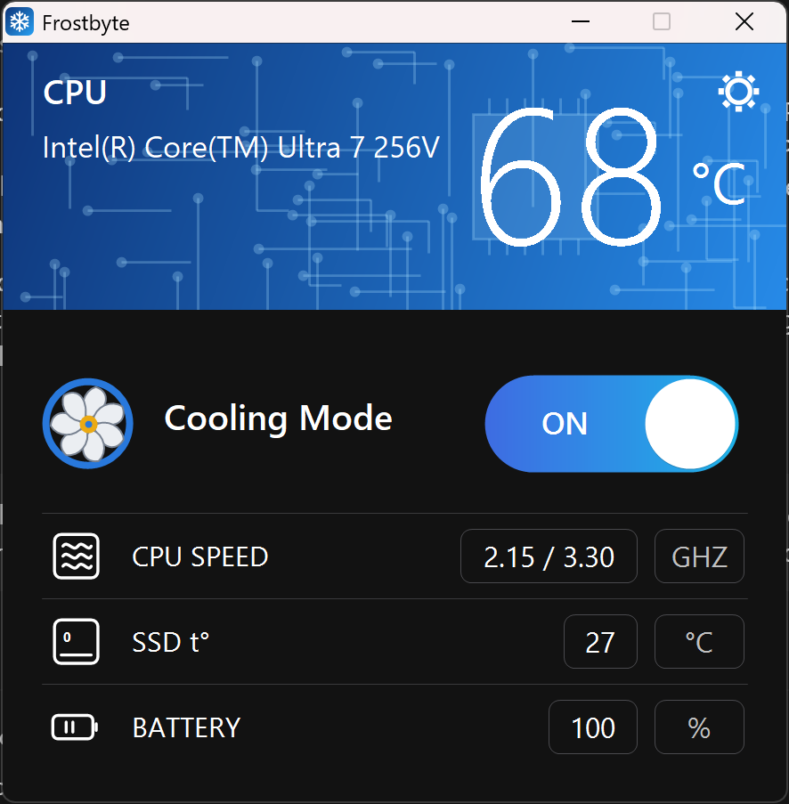
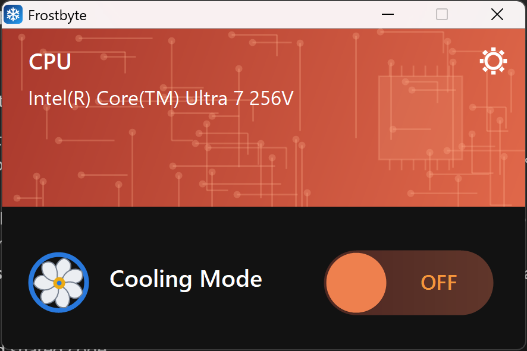
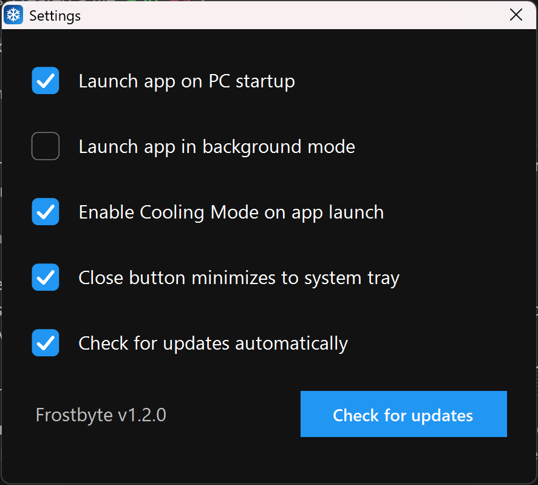

Frostbyte: One-Click Cooling for Windows
Run your PC cooler and quieter
A small Windows app with a single Cooling Mode switch. It stops your CPU from pushing to maximum boost speed, which reduces heat, fan noise and often power use.
Frostbyte Features


See How Frostbyte Works

Why Use Frostbyte: Features
Keep Your System Cool
Frostbyte creates a Windows power plan named "Frostbyte" by copying the built-in Balanced plan, then disables CPU boost and caps the maximum processor state at 99%. The result is a cooler CPU under everyday workloads.
One Switch, Fully Reversible
Turn Cooling Mode off and Frostbyte reactivates your original power plan and deletes its own. Nothing is left behind.
Lives in Your Tray
A system tray icon with a right-click menu lets you toggle Cooling Mode without opening the window. Choose to launch at sign-in, start in the background, enable Cooling Mode on launch, or minimize to tray on close.
Work in Peace
Enjoy a quieter computer. Startup runs through a Task Scheduler task, so Frostbyte has the elevated rights it needs without a UAC prompt at every sign-in.
Scriptable
The bundled CoolMode.exe command-line tool supports on, off, toggle and status, ideal for shortcuts and automation.
Safe, Verified Updates
An optional daily check against GitHub Releases asks for your confirmation before installing anything, and downloads are verified by SHA-256 checksum.
How to Install and Use Frostbyte
Download
Get Frostbyte-Setup-x.y.z.exe from the latest release on GitHub.
Install
Run the installer. Because the app is unsigned, Windows SmartScreen may warn you: choose "More info", then "Run anyway". The installer also sets up PawnIO, a small free signed driver that gives accurate CPU temperatures.
Launch
Open Frostbyte and accept the administrator prompt, which is required to change power settings. No registration or activation codes needed.
Flip the Switch
Click the switch to turn Cooling Mode on or off, and use Settings to choose how Frostbyte starts and where it lives.
CoolMode.exe on # enable Cooling Mode CoolMode.exe off # restore your previous power plan CoolMode.exe toggle CoolMode.exe status